첨단산업특성화대학원(로봇 분야) 선정
로봇을 만들고
활용하는
공과대학 기계공학과

2027학년도 1학기 신입생 모집
기계 및 로봇 관련 전공희망자
누구나 지원 가능
누구나 지원 가능
추가모집 시기에 학과명은 '기계로봇공학과'로 변경 예정
경북대학교 일반대학원 모집요강 기준
경북대학교 일반대학원 모집요강 기준
Scholarship · 장학
입학생 전원 장학생
석사과정
월 190만원 이상
장학금 지급
박사과정
월 210만원 이상
장학금 지급
- +연구과제 참여 시 인건비 추가 수혜 가능
- +취업 연계형 산학장학생 · 국내외 연구활동 지원
- +해외 학회 참여 · 글로벌 로봇 공동연구 연수

Research · 연구 분야
기계공학 어느 분야든
로봇 기술을 더한다
로봇만 하는 곳이 아닙니다.
로봇 기술을 갖춘 기계공학 전문가를 키웁니다
로봇 기술을 갖춘 기계공학 전문가를 키웁니다
제어 및 동역학교수 9명
휴머노이드·지능형 로봇 · 자율주행·UAM 등 미래 모빌리티 · 드론 · 액추에이터 · 피지컬 AI · 로봇 설계·제어 · 진동 및 초음파 센서 등
관련 업계현대자동차 · 현대모비스 · 삼성전자 · LG전자 · 두산로보틱스 등
설계 및 생산교수 7명
정밀 가공 · 스마트 제조 · 자동화 및 품질 관리 · 재료 역학 · 구조 해석 · 첨단 소재 및 내구성 평가 · 마이크로 나노 센서 등
관련 업계현대자동차 · 삼성전자 · SK하이닉스 · LG전자 · 포스코 · 현대제철 · 세아베스틸 · 현대중공업 등
열유체 및 에너지교수 9명
에너지 변환 · 원자력 및 친환경 에너지 · 연소 · 열관리 및 냉각 시스템 · 공기역학·유동 해석 · 항공우주 추진 기술 등
관련 업계한국전력공사 · 한국수력원자력 · 두산에너빌리티 · LG에너지솔루션 · SK온 · 대한항공 · KAI · 한화에어로스페이스 등
Research 1/3 · 교수와 연구실
제어 및 동역학
- 강남철기계역학 및 인체동역학 연구실동역학·진동·소음 · AI 생체신호 분석
- 김진욱진동음향 메타구조 연구실초음파 장비 · 진동음향 센서
- 노용래음향·진동공학 연구실초음파 트랜스듀서 · 센서·액추에이터
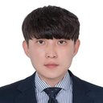
신영식AI 로봇 모빌리티 연구실SLAM · 자율주행 · AI 로보틱스- 오건영바이오로보틱스 연구실외골격·재활·햅틱 로봇 · 웨어러블 센서
- 이상헌지능형 메카트로닉스 및 제어 연구실모터 · 모빌리티 · 로봇 시스템 설계 및 제어
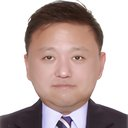
이학필드로봇 연구실피지컬 AI · 보행 로봇 · 인간-로봇 협업- 최수민소프트 로봇 연구실소프트 그리퍼·핸드 · 모바일·가사 로봇
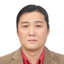
황창순로봇시스템 연구실로봇 손 · 스케이트·하이브리드 이동 로봇
누르면 연구실 홈페이지로 · 관심 연구실 교수님께 이메일로 연락
Research 2/3 · 교수와 연구실
설계 및 생산
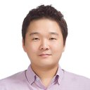
곽문규멀티스케일 구조 시스템 연구실생체모방 마이크로·나노 표면 · 양산 기술- 김규만마이크로 시스템 & 나노엔지니어링 연구실마이크로·나노 정밀가공 · AI 공정 모니터링
- 김성열기능성 재료 역학 및 전기화학 연구실에너지 소재 · 극한환경 구조 · 피로파괴
- 양승한지능생산시스템 연구실초정밀 생산시스템 · 다축 이송계 · 다자유도 로봇
- 위정욱첨단소재 내구성 및 역학 연구실복합소재 내구성 · 파손 예측 · AI 수명예측
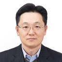
정영훈생산공정 연구실스마트·자율제조 · 절삭공정 · 생체재료- 정용록극한환경 트랜스듀서 연구실마이크로·나노 반도체공정 · 극한환경 센서
누르면 연구실 홈페이지로 · 관심 연구실 교수님께 이메일로 연락
Research 3/3 · 교수와 연구실
열유체 및 에너지
- 김상훈고속비행체 공기역학 연구실극초음속·희박기체 · 위성·발사체 유동
- 남형석에너지변환 및 열시스템 연구실폐기물 에너지화 · CO₂ 포집·활용 · 공조
- 박일석응용열전달연구실다상유동·상변화 열전달 · 모터 냉각
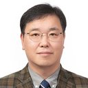
박철우바이오실험유체공학 연구실바이오유체 · 열유동 해석 · 나노입자 열전달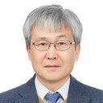
박태선난류 열전달 및 연소 연구실액체로켓엔진 · 난류 유동·열전달- 이정표항공우주 추진 및 연소 연구실로켓추진 · 데토네이션 엔진 · 연소불안정
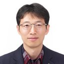
조대성다상열유체 연구실비등·임계열속 · 원자로 열적 안정성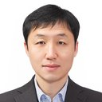
최상헌기계학습 및 유체역학 연구실물리 기반 AI · 배터리·유체·고체 연성 해석- 홍정구연소공학 연구실친환경 연소·에너지 · 분무·인젝터
누르면 연구실 홈페이지로 · 관심 연구실 교수님께 이메일로 연락
Roadmap · 로드맵
입학부터 졸업까지
이렇게 준비한다
졸업할 때 손에 남는 것
논문 + 기업 문제를 로봇으로 푼 경험 = 포트폴리오
석사2년 · 현장 문제 해결력
- 1학기기초 과목 · 연구실과 관심 분야 정하기
- 2학기심화 과목 · 산학프로젝트 팀 꾸리기
- 3학기로봇 응용 과목 + 산학프로젝트 · 학술대회
- 4학기학위논문 · 인턴십 · 채용 연계
박사석박통합 포함 · 핵심기술 + 리더십
- 진입심화 과목 · 핵심기술 연구 주제 정하기
- 연구산학프로젝트를 여러 학기 이어 가며 팀을 이끈다
- 확장공동연구 · 특허 · 기술이전 · 해외 연수
- 학위박사논문 · 연구기관 · 기업 연구소로
Industry Project · 산학프로젝트
기업의 진짜 문제를
로봇으로 푼다
기업이 과제를 낸다공정 개선 · 시스템 통합 · 현장 실증
›
한 학기, 팀으로학생 3~5명 + 지도교수 + 기업 멘토
›
결과를 남긴다학위논문 · 특허 · 현장 적용
재학 중 1개 이상, 한 학기 1인 1프로젝트. 과제 예: 자동차 부품 라인 로봇 셀 + 비전 검사 · 수술 로봇 정밀 제어 · 발사체 부품 조립 자동화


과제를 내는 컨소시엄 25개사 · 로봇을 만드는 기업과 로봇을 쓰는 기업
Career · 진로
포트폴리오를 들고
원하는 곳으로
졸업할 때 손에 남는 것
논문 · 특허 · 학회 발표 · 현장에서 돌아간 로봇
기계공학 전공자가 가는 곳 (예)
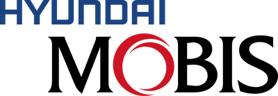
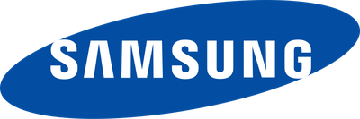
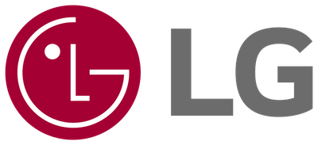
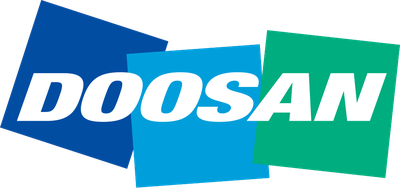
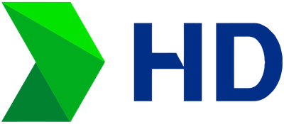
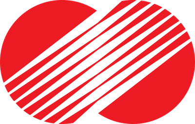
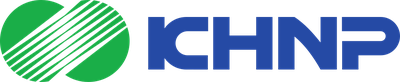
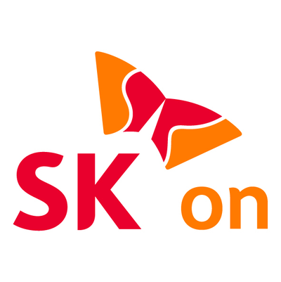
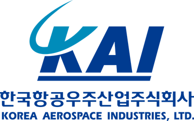
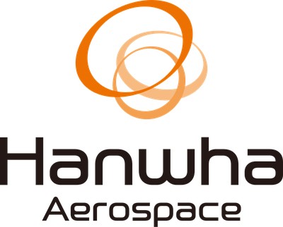
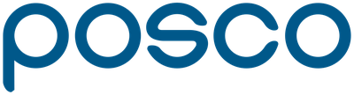
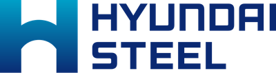
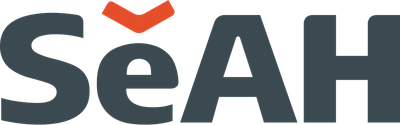
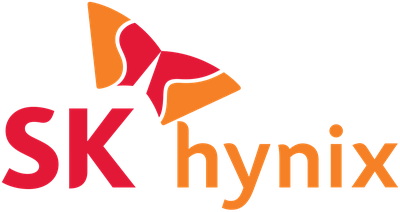
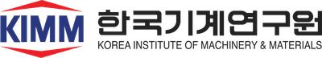
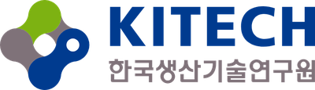
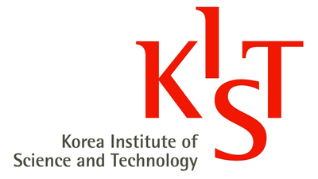
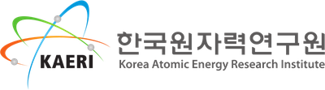
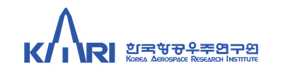
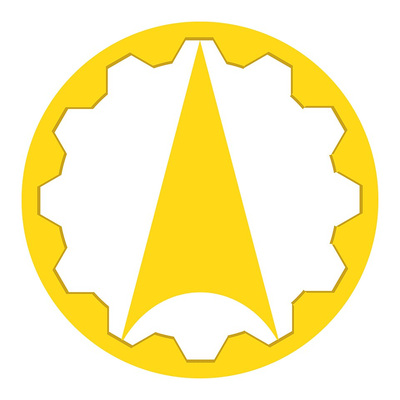
로봇 및 자동화 · 스마트제조 · 모빌리티 · 방산 등 기계 및 로봇 관련 기업 및 연구기관 · 박사 진학 · 창업
Apply · 일정
지원 일정
2차 모집
2026. 11. 13 (금) – 11. 20 (금)
추가 모집
2027. 1월 중 (예정)
지원 전에
- 기계공학부 홈페이지에서 교수진 연구 분야 확인 me.knu.ac.kr
- 관심 있는 교수님께 이메일로 연락
- 경북대학교 일반대학원 모집요강에 따라 원서 접수